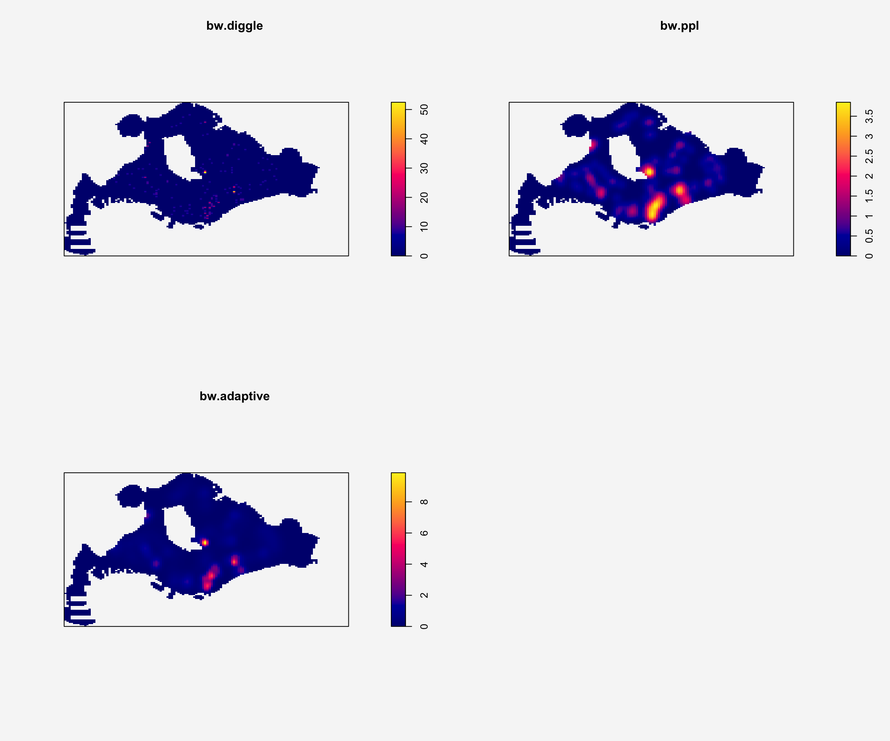
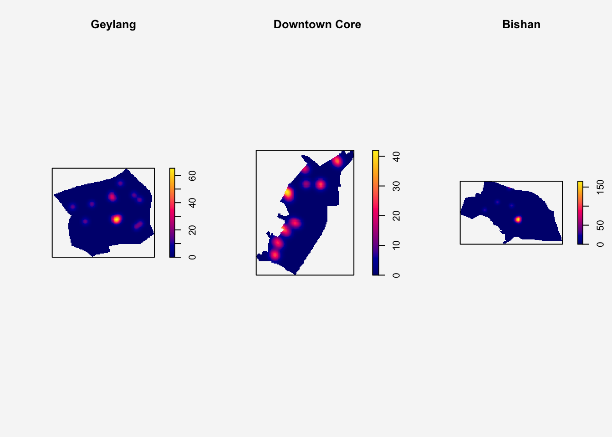
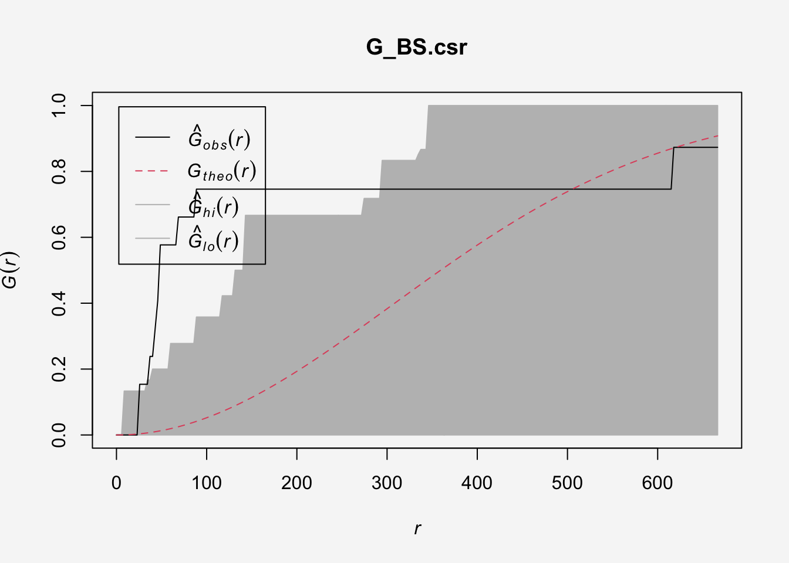
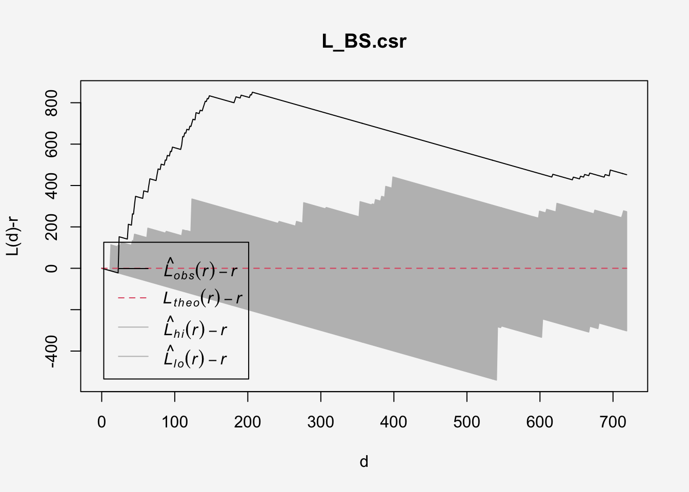
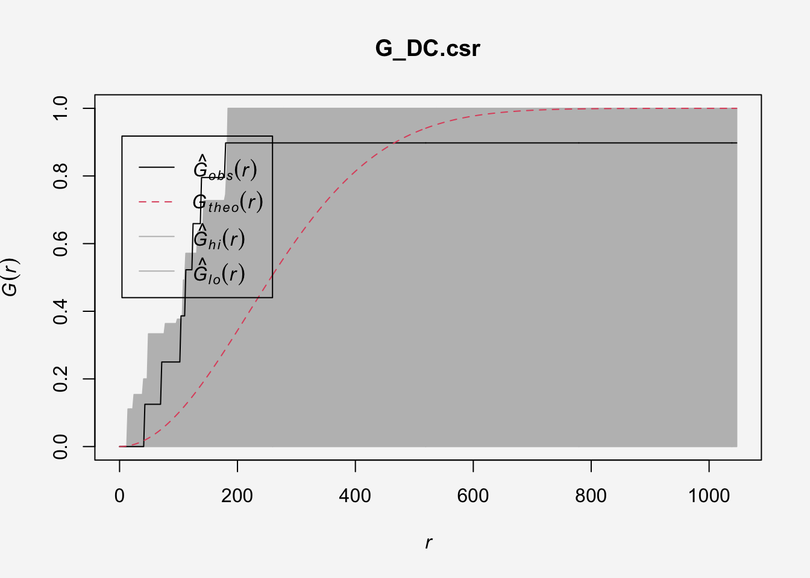
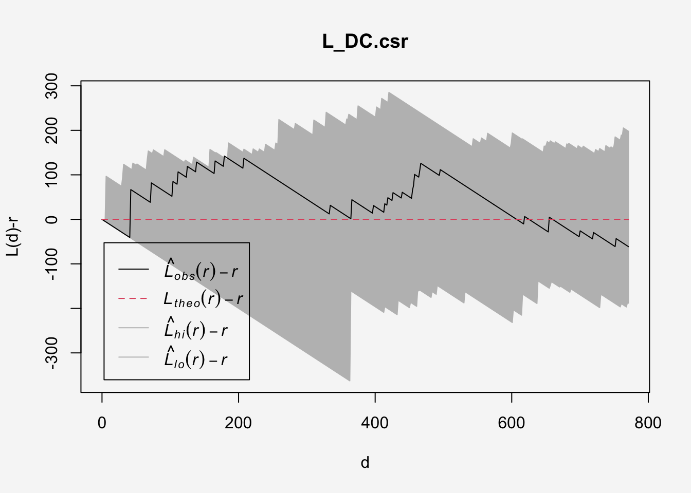

pacman::p_load(sf,tmap,tidyverse,sparr,terra,spatstat,rvest,httr,knitr)Take-home Ex01: Geospatial Analytics for Public Good
1 Overview
The locations of businesses and firms are central to urban development, influencing economic growth, job creation, and the availability of resources and services for residents and other businesses. Strategic locations provide competitive advantages, access to talent and infrastructure, and impact brand image and market positioning, while also shaping the city’s overall character and functionality by fostering specialized districts and facilitating efficient supply chains and employee commutes.
Studying the spatio-temporal patterns of businesses and firms is crucial for urban development because it reveals how economic activity and urban forms evolve, enabling better urban planning, promoting sustainability, identifying urban inefficiencies, and enhancing quality of life. By understanding where and when businesses locate and operate, urban planners can design cities more effectively, anticipate growth, ensure resource efficiency, and tailor infrastructure to support economic vitality and community well-being.
1.1 Objectives
In this take-home exercise, we are interested to investigate the spatial and spatio-temporal patterns of new businesses and firms established in Singapore for the first six months of 2025
The specific objectives of this take-home exercise are as follows:
To identify the “where” and “when” of new business entities, revealing clusters, patterns, and trends that are crucial for informed urban planning, resource allocation, and economic development.
To identify complex interaction patterns and emergent phenomena in the distribution of new businesses beyond simple proximity or density, such as clustering of related businesses, the influence of past trends on future locations, and the overall structural development of commercial areas, which are crucial for scientific urban planning and policy-making.
By understanding where businesses are located and how their distribution changes over time, urban planners and managers can unlock spatial intelligence, optimize operations, and create effective strategies to attract investment and promote sustainable growth.
1.2 Rationale for Industry Selection
This analysis explores the business distribution patterns of three key sectors: 56112 cafes, 471 non-specialized retail stores and 663 family offices. These industries are selected for the following reasons:
1.2.1 Cafes (SSIC:56112)
Kopitiam culture is deeply ingrained in Singapore’s social fabric and remains highly popular. This makes it interesting to explore their location strategies, whether they prefer to open outlets near competitors to attract foot traffic or in areas with fewer rivals to reduce competition?
1.2.2 Retail Sale in Non-specialised Stores (SSIC:471)
SSIC 471 encompasses supermarkets, hypermarkets, convenience stores and other non-specialized retail stores. Although e-commerce market share continues to grow, I have noticed that various small retailers still operate in HDB estates and at street level. Hence, I am curious whether these stores are distributed as I expected - clustered in residential areas over time.
1.2.3 Fund Management Activities (SSIC:663)
In recent years, many investors have been shifting their assets from Hong Kong and Shanghai to Singapore. Based on news reports, many of them have established family offices to manage their wealth. Therefore, I am curious about where these companies choose to register their operations. Are they clustered in the Central Business District as expected?
2 Getting Started
2.1 Import Libraries
This analysis uses the following libraries:
| Library | Desc |
|---|---|
| sf | handling geospatial data |
| tmap | visualization for geospatial data |
| tidyverse | handling data including packages readr, tidyr and dplyr |
| sparr | provides functions to estimate fixed and adaptive kernel-smoothed spatial relative risk surfaces via the density-ratio method and perform subsequent inference. |
| spatstat | for point pattern analysis |
| terra | a modern spatial data analysis package to replace the raster package. terra provides functionalities for creating, reading, manipulating, and writing raster and vector data, and it’s built on top of GDAL and PROJ libraries for enhanced performance |
| rvest | scraping (or harvesting) data from web pages |
| knitr | generate elegant, flexible, and fast dynamic report |
| httr | package in R provides a set of tools for interacting with web resources via HTTP. It simplifies the process of making HTTP requests (GET, POST, PUT, DELETE, etc.) and handling the responses |
2.2 Import Master Plan 2019 Data
Master Plan 2019 is the statutory land use plan that guides Singapore’s development in the medium term over the next 10 to 15 years. It is available as a polygon feature layer in KML format, maintained and published by the Urban Redevelopment Authority (URA)
mppa <- st_read("data/geospatial/MasterPlan2019PlanningAreaBoundaryNoSea.kml")To extract the information, the function from Hands-on Ex01.b is resued to extract data from html:
extract_kml_field <- function(html_text, field_name) {
if (is.na(html_text) || html_text == "") return(NA_character_) # check if text is na
page <- read_html(html_text)
rows <- page %>% html_elements("tr") # find table row element
value <- rows %>%
# looks through each row to find table header == field_name and
keep(~ html_text2(html_element(.x, "th")) == field_name) %>%
html_element("td") %>% # extract table data
html_text2() # and then extract clean text context
if (length(value) == 0) NA_character_ else value # return value if is not NA
}mppa <- mppa %>%
mutate(REGION_N = map_chr(Description,extract_kml_field,"REGION_N"),
PLN_AREA_N = map_chr(Description,extract_kml_field,"PLN_AREA_N"))%>%
select(-Name, -Description) %>% # unselect columns "Name" and "Description"
relocate(geometry, .after = last_col()) # move the "geometry" to the endFollowing data extraction, let us transform its CRS from WGS84 to SVY21 for accuracy and further spatial analysis requirements:
mppa <- mppa %>%
#Removes Z (elevation) and M (measure) dimensions from the geometry if they exist
st_zm(drop = TRUE, what = "ZM") %>%
st_transform(crs = 3414)
st_geometry(mppa)write_rds(mppa,"data/rds/mppa.rds")mppa <- read_rds("data/rds/mppa.rds")Let us plot planning area:
tm_shape(mppa) +
tm_polygons(col ="REGION_N",
palette = "set2",
lwd = 0.5)+
tm_text("PLN_AREA_N", size=0.4,
auto.placement = TRUE,
remove.overlap = TRUE)+
tm_title("Planning Area in Singapore",
position = tm_pos_out("center", "top", "center"))+
tm_legend(frame = FALSE,
position = c("right", "bottom"))+
tm_layout(frame = FALSE,
bg.color = "#f6f6f6")
Since our focus is on business operations occurring on the main island, this study will exclude non-business areas such as the North-Eastern Islands, Western Islands, Southern Islands, Central Water Catchment and Western Water Catchment.
mppa_sf <- mppa %>%
filter (PLN_AREA_N != "CENTRAL WATER CATCHMENT",
PLN_AREA_N != "WESTERN WATER CATCHMENT",
PLN_AREA_N != "WESTERN ISLANDS",
PLN_AREA_N != "SOUTHERN ISLANDS",
PLN_AREA_N != "NORTH-EASTERN ISLANDS",
)Let’s plot our study area again:
tm_shape(mppa_sf) +
tm_polygons(col ="REGION_N",
palette = "set2",
lwd = 0.5)+
tm_text("PLN_AREA_N", size=0.4,
auto.placement = TRUE,
remove.overlap = TRUE)+
tm_title("Subzones in Singapore",
position = tm_pos_out("center", "top", "center"))+
tm_legend(frame = FALSE,
position = c("right", "bottom"))+
tm_layout(frame = FALSE,
bg.color = "#f6f6f6")
2.3 Import ACRA Data
The data from the Accounting and Corporate Regulatory Authority (ACRA) will be used for spatial analysis. The dataset comprises 27 files organized by the first letter of the company name (A-Z and Others). The data encompasses information on all businesses registered in Singapore, including company profiles, industry classifications, and registration details.
Since the data files follow a consistent naming format and are stored in the same folder, we will use map_dfr() to import and combine all files:
folder_path <- "data/ACRA"
file_list <- list.files(path = folder_path,
pattern = "^ACRA*.*\\.csv$",
full.names = TRUE)
acra <- file_list %>%
map_dfr(read_csv)2.4 Extract Selected Industry Data
In this section, we will extract selected data from January to June 2025 for three industries: Cafes (SSIC 56112), Non-specialised Retail (SSIC 471), and Fund Management (SSIC 663).
cafes_56112 <- acra %>%
select(1,3,4,8:9,11,17,22) %>%
filter(grepl("56112", primary_ssic_code)) %>%
rename(date = registration_incorporation_date) %>%
mutate(date = as.Date(date),
Year = year(date),
Month_num = month(date,
label =TRUE,
abbr =TRUE)) %>%
# make sure the post_code are 6 digits
mutate(postal_code = str_pad(postal_code,
width =6,
side = "left",pad ="0")) %>%
filter(Year == 2025,
Month_num %in% c("Jan","Feb","Mar","Apr","May","Jun"))
retail_471 <- acra %>%
select(1,3,4,8:9,11,17,22) %>%
filter(grepl("^471", primary_ssic_code)) %>%
rename(date = registration_incorporation_date) %>%
mutate(date = as.Date(date),
Year = year(date),
Month_num = month(date,
label =TRUE,
abbr =TRUE)) %>%
# make sure the post_code are 6 digits
mutate(postal_code = str_pad(postal_code,
width =6,
side = "left",pad ="0")) %>%
filter(Year == 2025,
Month_num %in% c("Jan","Feb","Mar","Apr","May","Jun"))
FM_663 <- acra %>%
select(1,3,4,8:9,11,17,22) %>%
filter(grepl("^663", primary_ssic_code)) %>%
rename(date = registration_incorporation_date) %>%
mutate(date = as.Date(date),
Year = year(date),
Month_num = month(date,
label =TRUE,
abbr =TRUE)) %>%
# make sure the post_code are 6 digits
mutate(postal_code = str_pad(postal_code,
width =6,
side = "left",pad ="0")) %>%
filter(Year == 2025,
Month_num %in% c("Jan","Feb","Mar","Apr","May","Jun"))2.5 Geocoding for Coodinates
Instead of coordinates, ACRA only provides postal code and address. To retrieve the coordinates, we need to apply geocoding on postal codes using OneMap API.
Firstly, we combine the extracted data by row:
combined_data <- rbind(cafes_56112,retail_471,FM_663)Next, we extract the unique postal codes from the combined data.
postcodes <- unique(combined_data$postal_code)
length(postcodes)[1] 595We have total 595 unique observations in this exercise.
Next, we use the httr package to send a GET request to the OneMap API for coordinate retrieval:
url <- "https://onemap.gov.sg/api/common/elastic/search"
found <- data.frame()
not_found <- data.frame(postcode =character())
for(pc in postcodes) {
query <- list(
searchVal = pc,
returnGeom = "Y",
getAddrDetails = "Y",
pageNum ="1"
)
res <- GET(url, query=query)
json <- content(res)
if(json$found !=0) {
df <- as.data.frame(json$results, stringFactors =FALSE)
df$input_postcode <- pc
found <- bind_rows(found,df)
} else{
not_found <- bind_rows(not_found, data.frame(postcode=pc))
}
}Now, let us examine the mapping result:
nrow(found)[1] 595nrow(not_found)[1] 0The results above indicate we successfully retrieve all the coordinates !
2.6 Combine and Convert Data into sf Format
In this section, we apply left_join() to merge the original dataset with the geocoded results containing spatial coordinates. Using the retrieved X and Y values (longitude and latitude) as coordinates, we convert the combined dataset into an sf object with st_as_sf().
found <- found %>% select(1:10)
# cafe
cafes_56112 <- cafes_56112 %>%
left_join(found,
by = c('postal_code'='POSTAL'))
cafe_sf <- st_as_sf(cafes_56112,
coords = c("X","Y"),
crs=3414)
# retail
retail_471 <- retail_471 %>%
left_join(found,
by = c('postal_code'='POSTAL'))
retail_sf <- st_as_sf(retail_471,
coords = c("X","Y"),
crs=3414)
# FM
FM_663 <- FM_663 %>%
left_join(found,
by = c('postal_code'='POSTAL'))
fm_sf <- st_as_sf(FM_663,
coords = c("X","Y"),
crs=3414)2.7 Mapping Geospatial Data
After data preparation, let’s plot the map and examine the distribution of the three industries:
2.7.1 Cafes
st_geometry(cafe_sf)Geometry set for 167 features
Geometry type: POINT
Dimension: XY
Bounding box: xmin: 12020.59 ymin: 28485.43 xmax: 42416.59 ymax: 47897.38
Projected CRS: SVY21 / Singapore TM
First 5 geometries:tm_shape(mppa_sf) +
tm_polygons(col ="REGION_N",
border.col = "white",
palette = "set2",
lwd = 0.5)+
tm_shape(cafe_sf) +
tm_dots(fill = "black", size = 0.5, shape = 16)+
tm_title("Cafe Distribution: H1 2025",
position = tm_pos_out("center", "top", "center"))+
tm_legend(frame = FALSE,
position = c("right", "bottom"))+
tm_layout(frame = FALSE,
bg.color = "#f6f6f6")
There are 167 cafes (drink stores/stalls) opened from January 2025 to June 2025. Aside from the central region, their distribution appears relatively even across other areas.
2.7.2 Non-specialised Retail Stores
st_geometry(retail_sf)Geometry set for 460 features
Geometry type: POINT
Dimension: XY
Bounding box: xmin: 4670.11 ymin: 27393.65 xmax: 45154.27 ymax: 49401.78
Projected CRS: SVY21 / Singapore TM
First 5 geometries:tm_shape(mppa_sf) +
tm_polygons(col ="REGION_N",
border.col = "white",
palette = "set2",
lwd = 0.5)+
tm_shape(retail_sf) +
tm_dots(fill = "black", size = 0.5, shape = 17)+
tm_title("Non-specialized Retail Store Distribution: H1 2025",
position = tm_pos_out("center", "top", "center"))+
tm_legend(frame = FALSE,
position = c("right", "bottom"))+
tm_layout(frame = FALSE,
bg.color = "#f6f6f6")
A total of 460 non-specialised retail stores opened between January and June 2025. Compared to cafes, their distribution appears more clustered across all regions.
2.7.3 Family Office
st_geometry(fm_sf)Geometry set for 238 features
Geometry type: POINT
Dimension: XY
Bounding box: xmin: 12302.18 ymin: 27485.42 xmax: 42579.88 ymax: 48173.98
Projected CRS: SVY21 / Singapore TM
First 5 geometries:tm_shape(mppa_sf) +
tm_polygons(col ="REGION_N",
border.col = "white",
palette = "set2",
lwd = 0.5)+
tm_shape(fm_sf) +
tm_dots(fill = "black", size = 0.5, shape = 18)+
tm_title("Fund Management Activity Distribution: H1 2025",
position = tm_pos_out("center", "top", "center"))+
tm_legend(frame = FALSE,
position = c("right", "bottom"))+
tm_layout(frame = FALSE,
bg.color = "#f6f6f6")
A total of 238 family offices opened between January and June 2025. The family offices appear with high density concentrated in the CBD area.
2.7.4 Combined Plot of the Three Industries’ Distribution
tm_shape(mppa_sf) +
tm_polygons(col ="REGION_N",
border.col = "white",
palette = "set2",
lwd = 0.5)+
tm_shape(retail_sf) +
tm_dots(fill = "red", size = 0.5, shape = 17)+
tm_shape(cafe_sf) +
tm_dots(fill = "blue", size = 0.5, shape = 16)+
tm_shape(fm_sf) +
tm_dots(fill = "black", size = 0.5, shape = 18)+
tm_title("Fund Management Activity Distribution: H1 2025",
position = tm_pos_out("center", "top", "center"))+
tm_legend(frame = FALSE,
position = c("right", "bottom"))+
tm_layout(frame = FALSE,
bg.color = "#f6f6f6")
Among the three industries, family offices exhibit the highest spatial intensity, with clear clusters concentrated in the CBD area.
3 Geospatial Data wrangling
Since the spatstat package relies on specific data structures like ppp (planar point pattern) for point data and owin for observation windows, we need to convert sf (Simple Features) objects into ppp and owin object.
3.1 Converting sf data frames to ppp class
The code chunk below uses as.ppp() of spatstat package to convert data from sf format to ppp format:
cafe_ppp <- as.ppp(cafe_sf)%>%
rjitter(retry = TRUE,
nsim = 1,
drop = TRUE)
fm_ppp <- as.ppp(fm_sf)%>%
rjitter(retry = TRUE,
nsim = 1,
drop = TRUE)
retail_ppp <- as.ppp(retail_sf)%>%
rjitter(retry = TRUE,
nsim = 1,
drop = TRUE)3.2 Creating owin object
In spatstat, an object called owin is specially designed to represent this polygonal region. We need to use owin object to define the study area of the analysis:
sg_owin <- as.owin(mppa_sf)The study area look like this
par(bg = "#f6f6f6")
plot(sg_owin)
5.3 Combining point events object and owin object
cafeSG_ppp <- cafe_ppp[sg_owin]
retailSG_ppp <- retail_ppp[sg_owin]
fmSG_ppp <- fm_ppp[sg_owin]Examine the output for three ppp objects:
A point is dropped outside the study area
cafeSG_pppMarked planar point pattern: 166 points
Mark variables:
uen entity_name entity_type_description entity_status_description date
address_type postal_code primary_ssic_code Year Month_num SEARCHVAL BLK_NO
ROAD_NAME BUILDING ADDRESS LATITUDE LONGITUDE
window: polygonal boundary
enclosing rectangle: [2667.54, 55941.94] x [21448.47, 50256.33] unitsAll points are within the study area
retailSG_pppMarked planar point pattern: 460 points
Mark variables:
uen entity_name entity_type_description entity_status_description date
address_type postal_code primary_ssic_code Year Month_num SEARCHVAL BLK_NO
ROAD_NAME BUILDING ADDRESS LATITUDE LONGITUDE
window: polygonal boundary
enclosing rectangle: [2667.54, 55941.94] x [21448.47, 50256.33] unitsAll points are within the study area
fmSG_pppMarked planar point pattern: 238 points
Mark variables:
uen entity_name entity_type_description entity_status_description date
address_type postal_code primary_ssic_code Year Month_num SEARCHVAL BLK_NO
ROAD_NAME BUILDING ADDRESS LATITUDE LONGITUDE
window: polygonal boundary
enclosing rectangle: [2667.54, 55941.94] x [21448.47, 50256.33] units4 Cafes Spatial Point Pattern Analysis
Problem Statement: Whether they prefer to open outlets near competitors to attract foot traffic or in areas with fewer rivals to reduce competition?
4.1 First-Order Spatial Point Patterns Analysis
4.1.1 Clark-Evan Test
We first perform the Clark-Evans test for first-order spatial point pattern analysis to determine whether the spatial point pattern of cafes exhibits clustering. Since we only have 167 points, it would be more robust to use Monte Carlo method instead of Z-test.
The hypothesis and alpha value are as follows:
Null and Alternative Hypotheses:
- H0 = The distribution of cafes are randomly distributed (R=1)
- H1= The distribution of cafes are clustered (R<1)
Significance Level: A 95% confidence level will be used (α = 0.05)
clarkevans.test(cafeSG_ppp,
correction = "none",
clipregion = "sg_owin",
alternative = "clustered",
method = "MonteCarlo",
nsim=99)
Clark-Evans test
No edge correction
Monte Carlo test based on 99 simulations of CSR with fixed n
data: cafeSG_ppp
R = 0.5775, p-value = 0.01
alternative hypothesis: clustered (R < 1)
Result Interpretation
Based on the Clark and Evans Test result, the R value is 0.59, with statistically siginificant p-value (p < 0.05). This provides sufficient evidence to reject the null hypothesis of Complete Spatial Randomness (CSR).
Therefore, we conclude that newly opened cafes in Singapore exhibit a clustered spatial pattern. This suggests that cafes may tend to locate near one another, possibly due to shared preferences for high-footfall areas.
4.1.2 Kernel Density Estimation
After confirming the clustered pattern, let us apply the KDE method to visualize hotspots with high intensity.
The code below use density() functions with two automatic bandwidth methods: bw.diggle and bw.ppl and adaptive.density() funtions to perform KDE analysis:
cafeSG_ppp_km <- rescale.ppp(
cafeSG_ppp, 1000, "km"
)
kde_cafeSG_km_ppl <- density(cafeSG_ppp_km,
sigma = bw.ppl,
edge = TRUE,
kernel = "gaussian")
kde_cafeSG_km_dg <- density(cafeSG_ppp_km,
sigma = bw.diggle,
edge = TRUE,
kernel = "gaussian")
kde_cafeSG_km_ad <- adaptive.density(cafeSG_ppp_km,
method="kernel")par(bg="#f6f6f6",mfrow = c(2,2))
plot(kde_cafeSG_km_dg, main = "bw.diggle")
plot(kde_cafeSG_km_ppl, main = "bw.ppl")
plot(kde_cafeSG_km_ad, main = "bw.adaptive")
The KDE plots above show high-density points around Bishan, Geylang and the Downtown Core, which are all located within the Central Region. Next, we zoom in on these three planning areas and reapply the Clark and Evans test as well as the KDE analysis
4.2 First-Order SPPA at the Planning Area Level
4.2.1 Geospatial Data Wrangling
We first extract the study area:
GL <- mppa_sf %>%
filter(PLN_AREA_N == "GEYLANG")
DC <- mppa_sf %>%
filter(PLN_AREA_N == "DOWNTOWN CORE")
BS <- mppa_sf %>%
filter(PLN_AREA_N == "BISHAN")Next, create owin object:
GL_owin = as.owin(GL)
DC_owin = as.owin(DC)
BS_owin = as.owin(BS)Combine ppp and owin object:
cafe_GL_ppp = cafe_ppp[GL_owin]
cafe_DC_ppp = cafe_ppp[DC_owin]
cafe_BS_ppp = cafe_ppp[BS_owin]Lastly, rescale the ppp object:
cafe_GL_ppp_km = rescale.ppp(cafe_GL_ppp,1000,"km")
cafe_DC_ppp_km = rescale.ppp(cafe_DC_ppp,1000,"km")
cafe_BS_ppp_km = rescale.ppp(cafe_BS_ppp,1000,"km")4.2.2 Clark-Evan Test
The hypothesis and alpha value are the same as section 4.1:
Null and Alternative Hypotheses:
- H0 = The distribution of cafes are randomly distributed (R=1)
- H1= The distribution of cafes are clustered (R<1)
Significance Level: A 95% confidence level will be used (α = 0.05)
clarkevans.test(cafe_GL_ppp,
correction = "none",
clipregion = "GL_owin",
alternative = "clustered",
method = "MonteCarlo",
nsim=999)
Clark-Evans test
No edge correction
Monte Carlo test based on 999 simulations of CSR with fixed n
data: cafe_GL_ppp
R = 0.76008, p-value = 0.013
alternative hypothesis: clustered (R < 1)clarkevans.test(cafe_DC_ppp,
correction = "none",
clipregion = "DC_owin",
alternative = "clustered",
method = "MonteCarlo",
nsim=999)
Clark-Evans test
No edge correction
Monte Carlo test based on 999 simulations of CSR with fixed n
data: cafe_DC_ppp
R = 0.55822, p-value = 0.001
alternative hypothesis: clustered (R < 1)clarkevans.test(cafe_BS_ppp,
correction = "none",
clipregion = "BS_owin",
alternative = "clustered",
method = "MonteCarlo",
nsim=999)
Clark-Evans test
No edge correction
Monte Carlo test based on 999 simulations of CSR with fixed n
data: cafe_BS_ppp
R = 0.64577, p-value = 0.002
alternative hypothesis: clustered (R < 1)
Result Interpretation
Geylang:
While the R value is 0.88, suggesting a clustered pattern, the p-value (0.06>0.05) indicates this clustered is not statistically significant, so we fail to reject the null hypothesis of Complete Spatial Randomness. Therefore, cafe locations in Geylanf appear to follow a random spatial distribution pattern.
Downtown Core & Bishan:
The R value of Downtown Core is 0.85 and Bishan is 0.58, with both statistically significant p-values (p < 0.05). This provides sufficient evidence to reject the null hypothesis of Complete Spatial Randomness, and conclude that the newly opened cafes in Bishan and Downtown Core exhibit clustered spatial patterns.
4.2.3 Kernel Density Estimation
par(bg="#f6f6f6",mfrow=c(1,3))
plot(density(cafe_GL_ppp_km,
sigma=bw.diggle,
edge=TRUE,
kernel="gaussian"),
main="Geylang")
plot(density(cafe_DC_ppp_km,
sigma=bw.diggle,
edge=TRUE,
kernel="gaussian"),
main="Downtown Core")
plot(density(cafe_BS_ppp_km,
sigma=bw.diggle,
edge=TRUE,
kernel="gaussian"),
main="Bishan")
The KDE plot shows that Bishan has a single dominant hotspot at its center, with a peak intensity of 150 density units per km². In contrast, the Downtown Core and Geylang feature multiple hotspots.
4.3 Second-Order Spatial Point Patterns Analysis
In this section, Bishan and the Downtown Core are selected for second-order spatial point pattern analysis.
set.seed(1234)4.3.1 Bishan Planning Area
4.3.1.1 Compute G-function estimation
The code below implement G-function to examine the nearest neighbor distance distribution :
G_BS = Gest(cafe_BS_ppp, correction = "border")
par(bg = "#f6f6f6")
plot(G_BS, xlim=c(0,500))
4.3.1.2 Performing CSR Test
Null and Alternative Hypotheses:
- H0 = The nearest neighbor distances of cafes at Bishan are randomly distributed.
- H1= The nearest neighbor distances of cafes at Bishan are not randomly distributed
Significance Level: A 98% confidence level will be used
Monte Carlo test with G-fucntion:
G_BS.csr <- envelope(cafe_BS_ppp, Gest,rank=1, nsim = 99)Generating 99 simulations of CSR ...
1, 2, 3, 4, 5, 6, 7, 8, 9, 10, 11, 12, 13, 14, 15, 16, 17, 18, 19, 20,
21, 22, 23, 24, 25, 26, 27, 28, 29, 30, 31, 32, 33, 34, 35, 36, 37, 38, 39, 40,
41, 42, 43, 44, 45, 46, 47, 48, 49, 50, 51, 52, 53, 54, 55, 56, 57, 58, 59, 60,
61, 62, 63, 64, 65, 66, 67, 68, 69, 70, 71, 72, 73, 74, 75, 76, 77, 78, 79, 80,
81, 82, 83, 84, 85, 86, 87, 88, 89, 90, 91, 92, 93, 94, 95, 96, 97, 98,
99.
Done.par(bg = "#f6f6f6")
plot(G_BS.csr)
Statistical Conclusion
G(r) increases rapidly below 100m and remains above the upper confidence envelope, indicating that approximately 60% of cafes in Bishan have their nearest neighbor within 100m, which is significantly more than expected under spatial randomness.
4.4.1.3 Compute L-function estimation
The code below implement L-function to examine the clustering at all scales:
L_BS = Lest(cafe_BS_ppp, correction = "Ripley")
par(bg = "#f6f6f6")
plot(L_BS, . -r ~ r,
ylab= "L(d)-r", xlab = "d(m)")
4.4.1.4 Performing Complete Spatial Randomness Test
Null and Alternative Hypotheses:
- H0 = The distribution of cafes at Bishan are randomly distributed.
- H1= The distribution of childcare services at Bishan are not randomly distributed
Significance Level: A 98% confidence level will be used
Monte Carlo test with L-fucntion:
L_BS.csr <- envelope(cafe_BS_ppp, Lest, nsim = 99, rank = 1, glocal=TRUE)Generating 99 simulations of CSR ...
1, 2, 3, 4, 5, 6, 7, 8, 9, 10, 11, 12, 13, 14, 15, 16, 17, 18, 19, 20,
21, 22, 23, 24, 25, 26, 27, 28, 29, 30, 31, 32, 33, 34, 35, 36, 37, 38, 39, 40,
41, 42, 43, 44, 45, 46, 47, 48, 49, 50, 51, 52, 53, 54, 55, 56, 57, 58, 59, 60,
61, 62, 63, 64, 65, 66, 67, 68, 69, 70, 71, 72, 73, 74, 75, 76, 77, 78, 79, 80,
81, 82, 83, 84, 85, 86, 87, 88, 89, 90, 91, 92, 93, 94, 95, 96, 97, 98,
99.
Done.par(bg = "#f6f6f6")
plot(L_BS.csr, . - r ~ r, xlab="d", ylab="L(d)-r")
Statistical Conclusion
This suggests Bishan has compact cafe clusters with a typical cluster diameter of 300-400m (radius 150-200m). Beyond this scale, the clustering effect gradually diminishes, but remains statisitically significant up to a of radius 700m.
4.3.2 Downtown Core Planning Area
4.3.1.1 Compute G-function estimation
The code below implement G-function to examine the nearest neighbor distance distribution :
G_DC = Gest(cafe_DC_ppp, correction = "border")
par(bg = "#f6f6f6")
plot(G_DC, xlim=c(0,500))
4.3.3.2 Performing CSR Test
Null and Alternative Hypotheses:
- H0 = The nearest neighbor distances of cafes at Geylang are randomly distributed.
- H1= The nearest neighbor distances of cafes at Geylang are not randomly distributed
Significance Level: A 98% confidence level will be used (α = 0.02)
Monte Carlo test with G-fucntion:
G_DC.csr <- envelope(cafe_DC_ppp, Gest,rank=1, nsim = 99)Generating 99 simulations of CSR ...
1, 2, 3, 4, 5, 6, 7, 8, 9, 10, 11, 12, 13, 14, 15, 16, 17, 18, 19, 20,
21, 22, 23, 24, 25, 26, 27, 28, 29, 30, 31, 32, 33, 34, 35, 36, 37, 38, 39, 40,
41, 42, 43, 44, 45, 46, 47, 48, 49, 50, 51, 52, 53, 54, 55, 56, 57, 58, 59, 60,
61, 62, 63, 64, 65, 66, 67, 68, 69, 70, 71, 72, 73, 74, 75, 76, 77, 78, 79, 80,
81, 82, 83, 84, 85, 86, 87, 88, 89, 90, 91, 92, 93, 94, 95, 96, 97, 98,
99.
Done.par(bg = "#f6f6f6")
plot(G_DC.csr)
Statistical Conclusion
G(r) shows that cafes distribution in Downtown Core follow a random pattern and has no clusters statistically.
4.3.3.3 Compute L-function estimation
The code below implement L-function to examine the clustering at all scales:
L_DC = Lest(cafe_DC_ppp, correction = "Ripley")
par(bg = "#f6f6f6")
plot(L_DC, . -r ~ r,
ylab= "L(d)-r", xlab = "d(m)")
4.3.2.4 Performing Complete Spatial Randomness Test
Null and Alternative Hypotheses:
- H0 = The distribution of cafes at Downtown Core are randomly distributed.
- H1= The distribution of childcare services at Downtown Core are not randomly distributed
Significance Level: A 98% confidence level will be used (α = 0.02)
Monte Carlo test with L-fucntion:
L_DC.csr <- envelope(cafe_DC_ppp, Lest, nsim = 99, rank = 1, glocal=TRUE)Generating 99 simulations of CSR ...
1, 2, 3, 4, 5, 6, 7, 8, 9, 10, 11, 12, 13, 14, 15, 16, 17, 18, 19, 20,
21, 22, 23, 24, 25, 26, 27, 28, 29, 30, 31, 32, 33, 34, 35, 36, 37, 38, 39, 40,
41, 42, 43, 44, 45, 46, 47, 48, 49, 50, 51, 52, 53, 54, 55, 56, 57, 58, 59, 60,
61, 62, 63, 64, 65, 66, 67, 68, 69, 70, 71, 72, 73, 74, 75, 76, 77, 78, 79, 80,
81, 82, 83, 84, 85, 86, 87, 88, 89, 90, 91, 92, 93, 94, 95, 96, 97, 98,
99.
Done.par(bg = "#f6f6f6")
plot(L_DC.csr, . - r ~ r, xlab="d", ylab="L(d)-r")
Statistical Conclusion
Although the obeserved L(d)-r is above 0, the values are not statistically significant. Hence, we conclude Downtown Core’s cafe follows complete spatial randomness and no significant clusters in the area.
4.3.2.5 Summary
Interestingly, while both Bishan and the Downtown Core exhibit R values below 1 in the first-order SPPA, which indicates clustering, and the KDE plots also show high point density within these planning areas, the second-order SPPA reveals a different pattern. Only Bishan demonstrates strong clustering at a radius of 150–200 m.
The list of business entities registered under the ‘cafe’ industry classification is as follows:
cafe_bishan <- cafe_sf %>%
filter(grepl("^57", postal_code))
kable(cafe_bishan)| uen | entity_name | entity_type_description | entity_status_description | date | address_type | postal_code | primary_ssic_code | Year | Month_num | SEARCHVAL | BLK_NO | ROAD_NAME | BUILDING | ADDRESS | LATITUDE | LONGITUDE | geometry |
|---|---|---|---|---|---|---|---|---|---|---|---|---|---|---|---|---|---|
| 202515476Z | BASTILLE PTE. LTD. | Local Company | Live Company | 2025-04-10 | LOCAL | 576194 | 56112 | 2025 | Apr | THE WINDSOR | 5A | ONTARIO AVENUE | THE WINDSOR | 5A ONTARIO AVENUE THE WINDSOR SINGAPORE 576194 | 1.3564322659845 | 103.827926805238 | POINT (27399.96 37612.9) |
| 53503285D | COFFEE NEAR ME | Sole Proprietorship/ Partnership | Live | 2025-04-30 | LOCAL | 574078 | 56112 | 2025 | Apr | ISLAND COUNTRY VILLAS | 20 | CASUARINA WALK | ISLAND COUNTRY VILLAS | 20 CASUARINA WALK ISLAND COUNTRY VILLAS SINGAPORE 574078 | 1.37576736358578 | 103.826798673849 | POINT (27274.42 39750.88) |
| 202512498W | OTTIE DELICACY PTE. LTD. | Local Company | Live Company | 2025-03-21 | LOCAL | 576147 | 56112 | 2025 | Mar | LIP HING INDUSTRIAL BUILDING | 3 | PEMIMPIN DRIVE | LIP HING INDUSTRIAL BUILDING | 3 PEMIMPIN DRIVE LIP HING INDUSTRIAL BUILDING SINGAPORE 576147 | 1.35227568621676 | 103.842338285452 | POINT (29003.79 37153.29) |
| 202513235R | OTTIE FEAST PTE. LTD. | Local Company | Live Company | 2025-03-26 | LOCAL | 576147 | 56112 | 2025 | Mar | LIP HING INDUSTRIAL BUILDING | 3 | PEMIMPIN DRIVE | LIP HING INDUSTRIAL BUILDING | 3 PEMIMPIN DRIVE LIP HING INDUSTRIAL BUILDING SINGAPORE 576147 | 1.35227568621676 | 103.842338285452 | POINT (29003.79 37153.29) |
| 202513249M | OTTIE INDULGENCE PTE. LTD. | Local Company | Live Company | 2025-03-26 | LOCAL | 576147 | 56112 | 2025 | Mar | LIP HING INDUSTRIAL BUILDING | 3 | PEMIMPIN DRIVE | LIP HING INDUSTRIAL BUILDING | 3 PEMIMPIN DRIVE LIP HING INDUSTRIAL BUILDING SINGAPORE 576147 | 1.35227568621676 | 103.842338285452 | POINT (29003.79 37153.29) |
| 202513264D | OTTIE TREATS PTE. LTD. | Local Company | Live Company | 2025-03-26 | LOCAL | 576147 | 56112 | 2025 | Mar | LIP HING INDUSTRIAL BUILDING | 3 | PEMIMPIN DRIVE | LIP HING INDUSTRIAL BUILDING | 3 PEMIMPIN DRIVE LIP HING INDUSTRIAL BUILDING SINGAPORE 576147 | 1.35227568621676 | 103.842338285452 | POINT (29003.79 37153.29) |
| 202518301K | OTTIE MOMENTS PTE. LTD. | Local Company | Live Company | 2025-04-28 | LOCAL | 576147 | 56112 | 2025 | Apr | LIP HING INDUSTRIAL BUILDING | 3 | PEMIMPIN DRIVE | LIP HING INDUSTRIAL BUILDING | 3 PEMIMPIN DRIVE LIP HING INDUSTRIAL BUILDING SINGAPORE 576147 | 1.35227568621676 | 103.842338285452 | POINT (29003.79 37153.29) |
| 202518327C | OTTIE SPARKS PTE. LTD. | Local Company | Live Company | 2025-04-28 | LOCAL | 576147 | 56112 | 2025 | Apr | LIP HING INDUSTRIAL BUILDING | 3 | PEMIMPIN DRIVE | LIP HING INDUSTRIAL BUILDING | 3 PEMIMPIN DRIVE LIP HING INDUSTRIAL BUILDING SINGAPORE 576147 | 1.35227568621676 | 103.842338285452 | POINT (29003.79 37153.29) |
| 202521992G | OTTIE BITES PTE. LTD. | Local Company | Live Company | 2025-05-21 | LOCAL | 576147 | 56112 | 2025 | May | LIP HING INDUSTRIAL BUILDING | 3 | PEMIMPIN DRIVE | LIP HING INDUSTRIAL BUILDING | 3 PEMIMPIN DRIVE LIP HING INDUSTRIAL BUILDING SINGAPORE 576147 | 1.35227568621676 | 103.842338285452 | POINT (29003.79 37153.29) |
| 202522003H | OTTIE CREATIONS PTE. LTD. | Local Company | Live Company | 2025-05-21 | LOCAL | 576147 | 56112 | 2025 | May | LIP HING INDUSTRIAL BUILDING | 3 | PEMIMPIN DRIVE | LIP HING INDUSTRIAL BUILDING | 3 PEMIMPIN DRIVE LIP HING INDUSTRIAL BUILDING SINGAPORE 576147 | 1.35227568621676 | 103.842338285452 | POINT (29003.79 37153.29) |
| 202522008D | OTTIE STYLES PTE. LTD. | Local Company | Live Company | 2025-05-21 | LOCAL | 576147 | 56112 | 2025 | May | LIP HING INDUSTRIAL BUILDING | 3 | PEMIMPIN DRIVE | LIP HING INDUSTRIAL BUILDING | 3 PEMIMPIN DRIVE LIP HING INDUSTRIAL BUILDING SINGAPORE 576147 | 1.35227568621676 | 103.842338285452 | POINT (29003.79 37153.29) |
| 202522076K | TASTE IPOH PTE. LTD. | Local Company | Live Company | 2025-05-21 | LOCAL | 573970 | 56112 | 2025 | May | MIDVIEW CITY | 24 | SIN MING LANE | MIDVIEW CITY | 24 SIN MING LANE MIDVIEW CITY SINGAPORE 573970 | 1.35902072145403 | 103.833760733143 | POINT (28049.21 37899.12) |
| 202525543C | UNIQUEJ CAFE PTE. LTD. | Local Company | Live Company | 2025-06-12 | LOCAL | 570022 | 56112 | 2025 | Jun | 22 SIN MING ROAD SINGAPORE 570022 | 22 | SIN MING ROAD | NIL | 22 SIN MING ROAD SINGAPORE 570022 | 1.3572844410824 | 103.839396679952 | POINT (28676.42 37707.13) |
Notably, nine related companies are registered at the same location, which may have artificially inflated the clustering pattern observed. If these nine companies were considered as a single entity, it is likely that Bishan would no longer exhibit significant clustering.